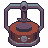
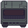
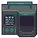
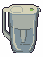
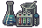
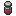
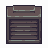
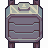

Game › Probably Stolen › Pha chế hoá chất
Tutorial pha chế hoá chất cho người mới
Từ lúc có bộ máy tới khi ra viên thuốc hạng cao và đem bán: cần gì, làm theo thứ tự nào, giữ nhiệt độ bao nhiêu, nâng cấp gì trước, và bán thì ảnh hưởng danh tiếng ra sao.
1Cần chuẩn bị gì
Cách có bộ máy
- Bắt đầu nghề Chemist – được tặng sẵn bộ kit (một số máy ở tình trạng cũ "Shabby").
- Đang chơi tiệm thường: gọi Joe Wild, mua giới thiệu Retired Chemist (giá gốc khoảng 1.000 Credits, xem báo giá thật) → được giao bộ máy cũ kèm sổ Chemistry 101.
- Wild còn có thể giới thiệu Lower Levels Chemist – người bán thuốc rẻ nhưng phạm pháp. Mua thuốc làm sẵn về bán là buôn hàng, không phải tự sản xuất.
Bộ kit Chemist gồm
 BlenderXay nguyên liệu rắn thành bột nhão
BlenderXay nguyên liệu rắn thành bột nhão
Heating PlateĐun để chiết xuất / phản ứng
EvaporatorBay hơi chất lỏng qua đêm (cần điện)
Chem FinisherRa thành phẩm, chấm hạng Composition SpectrometerĐo thành phần – bắt buộc
Composition SpectrometerĐo thành phần – bắt buộc
Pitcher (bình rót)Dùng để lọc Kotton FabricVải lọc hạt lớn
Kotton FabricVải lọc hạt lớn
Chemical SuppliesGói hoá chất – nhớ mở ra Cà phêNguyên liệu mẻ caffeine đầu tiên
Cà phêNguyên liệu mẻ caffeine đầu tiênTrong gói Chemical Supplies có gì
| Gói | Bên trong (theo 1 guide) | Ghi chú |
|---|---|---|
| Common | 2 chai cồn mini, Lipobond Agent, dung dịch axit, dung dịch bazơ | Giá gốc 50. Mua từ Retired Chemist, scavenger, Thief. |
 Restricted Restricted | 2 chai tiền chất (N-Methylol + chất ổn định), 1 chai Reducing Agent | Nguyên liệu làm Phanta. |
2Sơ đồ quy trình
Mọi mẻ đều đi qua cùng một dây chuyền. Bình chứa đi theo mẻ từ máy này sang máy khác; đo bằng spectrometer sau mỗi bước.

3Làm từng bước
BƯỚC 1Xay bằng Blender
Gắn một bình chứa vào máy, cho nguyên liệu rắn của công thức vào và xay thành bột nhão.
✓ Đo mẻ bằng spectrometer trước khi chuyển. ✗ Blender chưa có module hao mất 35% nguyên liệu.
Đun trên Heating Plate
Chuyển bình sang bếp, dùng đúng dung môi (cồn…) và nhiệt độ sổ tay ghi cho sản phẩm đó.
✓ Bếp chưa nâng cấp chỉ nhắm cố định 99°C → giữ nhiệt thấp bằng cách bật/tắt giữa Low và Off trong lúc nhìn nhiệt kế. ✗ Đừng để bếp chạy liên tục – xem bảng nhiệt độ ở mục 4.
Lọc (chỉ khi công thức yêu cầu)
Đặt Kotton Fabric vào pitcher trống trước, rồi mới rót hỗn hợp qua.
✗ Nhét vải vào sau khi đã đổ đầy thì không lọc được gì.
Bay hơi bằng Evaporator (qua đêm)
Chuyển sang máy bay hơi đã có điện, để chạy qua đêm. Sáng ra đo xem còn sót nước, cồn hay Lipobond không.
✗ Chem Finisher không nhận mẻ còn ướt. Bay hơi khô hẳn rồi mới đi tiếp. Máy này có thể lắp module thu hồi cồn (Solvent Recovery).
Ra thành phẩm ở Chem Finisher
Chọn đúng công thức đầu ra. Máy dùng một phần mẻ khô cho mỗi đơn vị (xem mục 7) và chấm hạng theo độ tinh khiết.
✓ Đo thành phẩm bằng spectrometer. Nhãn chỉ là lời tuyên bố, máy đo mới là kiểm tra thật. Để mẻ thử riêng, không trộn với hàng chưa đo.
4Nhiệt độ – chỗ hay hỏng mẻ nhất
Thang 0–160°C. Xanh = vùng an toàn, đỏ = hỏng/mất, vạch xanh dương = 99°C (giới hạn bếp chưa nâng cấp).
| Bước / chất | Giữ ở | Vượt quá thì |
|---|---|---|
| Nấm Dream/Nightmare Cap xay + cồn | 40–49°C | Trên 50°C nấm biến thành bã thực vật |
| Dịch chiết Dream Cap | < 60°C | Phân huỷ |
| Dịch chiết Nightmare Cap | < 50°C | Phân huỷ |
| Cồn | ≤ 78°C | Bay hơi mất dung môi |
| Lipobond Agent | ≤ 55°C | Bay hơi mất |
| Phanta | 110–130°C (nên 120–129°C) | Từ 130°C phân huỷ. Bếp thường chỉ lên 99°C → bắt buộc có module. |
5Chem Module – nâng cấp gì trước
Ba máy nhận Chem Module  , mỗi module thêm vào đổi một thứ:
, mỗi module thêm vào đổi một thứ:
Không module thì mẻ sạch hoàn hảo cũng chỉ ra tối đa 88% (Near-Pharma).
Blender – nguyên liệu bị hao- 0 module: nhắm cố định 99°C
- 1: trần nhiệt lên 160°C (đủ cho Phanta)
- 2: tự đặt nhiệt độ mục tiêu
- 3–4: nóng nhanh hơn
6Độ tinh khiết, hạng và giá
Độ tinh khiết = phần trăm hoạt chất trong phần mẻ máy dùng, sau khi cộng tạp chất của Finisher.
Muốn đạt Lab Pure
- Lắp đủ 4 module ở Finisher. Có 3 module thì vẫn cộng 1% → mẻ phải sạch tuyệt đối mới vừa chạm 99%, lẫn chút tạp là tụt xuống Pharma.
- Chọn chai axit/bazơ không có kim loại nặng.
- Đong sát lượng axit/bazơ cần – phần dư nằm lại trong mẻ và kéo độ tinh khiết xuống.
- Bay hơi khô hẳn trước khi vào Finisher.
 từng chút một và xem chỉ số chất ô nhiễm hoá học. Không lọc ở bước này. Viên lọc chỉ có tác dụng khi trong bình có nước – thả vào hỗn hợp khô là vô ích. Đừng chép số viên cố định từ guide cũ.
từng chút một và xem chỉ số chất ô nhiễm hoá học. Không lọc ở bước này. Viên lọc chỉ có tác dụng khi trong bình có nước – thả vào hỗn hợp khô là vô ích. Đừng chép số viên cố định từ guide cũ.Thành tựu Say My Name: cần một món thuốc gây nghiện hạng Lab Pure do chính bạn làm ra – hàng mua hay đổi tên không tính.
7Các sản phẩm
Caffeine Pill
Hợp pháp · nên làm đầu tiên- Cần / viên
- 5 mL mẻ khô
- Nguyên liệu
- Cà phê – ví dụ trong Chemistry Manual
- Quy trình
- Blender → Hot Plate → Evaporator → Chem Finisher

Dream Dust
Hàng cấm- Cần / lọ
- 2 mL mẻ khô
- Nguyên liệu
- Nấm Dream Cap + cồn
- Nhiệt độ
- Chiết 40–49°C, dịch chiết < 60°C

Nightmare Dust
Hàng cấm · độc- Cần / lọ
- 4 mL mẻ khô
- Nguyên liệu
- Nấm Nightmare Cap + cồn
- Nhiệt độ
- Giữ dưới 50°C cả lúc chiết lẫn dịch chiết

Phanta Pill
Hàng cấm · gây nghiện mạnh- Cần / viên
- 0,5 mL mẻ khô
- Nguyên liệu
- Gói Chemical Supplies (Restricted): N-Methylol + chất ổn định, Reducing Agent
- Nhiệt độ
- 120–129°C · bếp phải có module


Nomore Injector
Phần thưởng cốt truyện- Cần / ống
- 4 mL mẻ khô
- Ghi chú
- Thuốc giảm đau không gây nghiện. Cách mở công thức là spoiler cốt truyện nên nguồn không ghi.
Chỉ những gì nguồn ghi rõ được đưa vào. Lượng dung môi, axit/bazơ và các bước chi tiết của từng sản phẩm hãy xem Chemistry Manual trong game – đừng thay công thức trong game bằng mẹo chưa kiểm chứng.
8Lỗi hay gặp
- Theo mức 60°C trong sổ tay → nấm quá 50°C hoá bã.
- Để dịch chiết Nightmare (>50°C) hoặc Phanta (≥130°C) quá nóng. Bật/tắt bếp, đừng để chạy liên tục.
- Đun mất dung môi: cồn bay hơi trên 78°C, Lipobond trên 55°C.
- Cho dư axit/bazơ – phần dư làm giảm độ tinh khiết.
- Lấy chai axit/bazơ đầu tiên vớ được mà không đo kim loại nặng.
- Cho mẻ còn ướt vào Finisher – máy không nhận.
- Thả viên lọc nước vào hỗn hợp khô – không có tác dụng.
- Nhét vải Kotton vào pitcher sau khi đã đổ đầy – không lọc được.
- Mua thêm máy trước khi tìm ra bước bị kẹt.
9Đem bán và ảnh hưởng danh tiếng
Euphoria – vì sao khách quay lại
Mỗi chất cộng Euphoria và Độc tính theo lượng trong món bán ra:
| Chất | Euphoria | Độc tính | Dung tích 1 món |
|---|---|---|---|
| Dream Dust | 1 / μl | – | lọ 1200–1599 μl |
| Phanta | 10 / μl | 2 / μl | viên 300–399 μl |
| Zyanide | – | 1,66 / μl | – |
| Tổng Euphoria | Kết quả khi bán trực tiếp | Tỉ lệ |
|---|---|---|
| 0–749 | Khách phàn nàn | 32% |
| 750–999 | Khách phàn nàn | 8% |
| 1000–1599 | Khách nghiện | 16% |
| 1600–2199 | Khách nghiện | 40% |
| 2200+ | Khách nghiện | 48% |
Khách nghiện thường quay lại đầu ngày hôm sau đòi đúng món đó với ngân sách khá cao. Nghiện một lần không có nghĩa họ quay lại mãi. Nhà cung cấp y tế không trở thành khách nghiện.
An ninh (Security)
- Bán hàng cấm tạo bằng chứng và cộng giá trị vụ án trong hồ sơ An ninh. Khoảng 50 là bắt đầu có rủi ro bị kiểm tra.
- Tiến độ điều tra tăng mỗi ngày theo giá trị vụ án: 100–299 → +2, 300–849 → +6, 850–1199 → +9, 1200–1499 → +12, 1500+ → +20. Hậu quả: phạt, tịch thu hoặc bị bắt.
- Danh tiếng An ninh quanh +60 làm điều tra chậm lại; −20/−60 làm nhanh hơn. +100 vẫn không miễn kiểm tra.
- Danh tiếng Chợ Đen cao mở thêm trộm/người bán, nhưng không giảm rủi ro bị An ninh kiểm tra – hai thang tách biệt.
- Sự kiện nghiện Oxymore: phát Naloxgone miễn phí +1 danh tiếng Tầng Dưới; đem bán giá thường mất khoảng 4.
Cách giảm rủi ro

Smuggler's BayNgăn ngụy trang giấu hàng cấm
Chemist Storage BayCất đồ và vật tư hoá học riêng Wild's FixersPhí mỗi đêm, bằng chứng phân rã nhanh
Wild's FixersPhí mỗi đêm, bằng chứng phân rã nhanh- Để hàng cấm ở thùng riêng, không trưng công khai. Giấu sau tấm áp phích Nutrifruit thì phải hạ tấm áp phích xuống.
- Dịch vụ của Wild: Inspection Early Warning báo trước kiểm tra định kỳ; Rent Grace một lần – bị bắt gặp hàng cấm chỉ bị cảnh cáo.
- Perk Intimidating −33% bằng chứng; tránh Blabbermouth (+33%).
- Muốn lấy thành tựu Clean Hands thì đừng bán Phanta hay Dream Dust.
10Lộ trình cho người mới
Chọn nghề Chemist hoặc mua giới thiệu Retired Chemist qua Wild (~1.000 Credits). Mở gói, kiểm tra pin Evaporator.
Hàng hợp pháp, không lo An ninh. Đi trọn 5 bước, đo sau mỗi bước để quen máy.
Tính giá thành: nguyên liệu + hao mòn + điện + số đêm. Chỉ mở rộng khi còn đủ tiền thuê.
Lên dần 4 module để hạng cao hơn (88% → 100% trần). Sau đó tới Heating Plate, rồi Blender.
Chai axit/bazơ sạch, đong sát, giữ đúng nhiệt, bay hơi khô hẳn.
Muốn thử Phanta/Dream Dust: làm mẻ nhỏ, cất riêng, có Fixers trước, theo dõi hồ sơ An ninh sau mỗi lần bán.
Bản tổng hợp phục vụ tham khảo cá nhân. Nội dung gốc thuộc probablystolenwiki.com, probablystolenguides.com và các tác giả guide Steam; Probably Stolen thuộc Questing Goose Studio / tinyBuild. Một bản cập nhật game có thể đổi mọi con số ở đây.